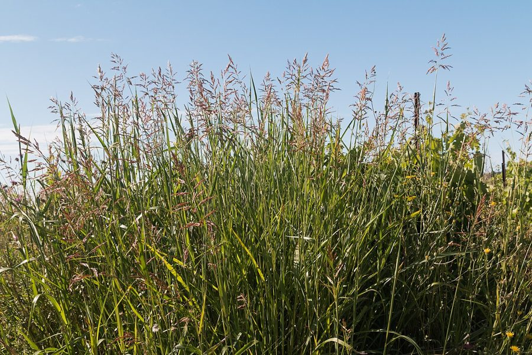

बरूJohnson Grass
Sorghum halepense · Poaceae · FLR-0223

- Scientific name वैज्ञानिक नाम
- Sorghum halepense (L.) Pers.
- Family कुल
- Poaceae
- Hindi हिंदी
- बरू
- Local names स्थानीय नाम
- baru, baroo, barroo, johnson grass
- Status here यहाँ की स्थिति
- native
- Movement आवागमन
- Resident, here all year
- IUCN IUCN
- not evaluated
- Review समीक्षा
- audited and independently read
When to look कब देखें
Present all year. साल भर मौजूद।
Uses and possibilities उपयोग और संभावनाएँ
Drawn from the documented uses in the profile below, where each is labelled traditional, current or a research lead. All uses →
Tell it apart from इनसे अलग पहचानें
बरू / Johnson Grass
Sorghum halepense (L.) Pers. — Poaceae
बरू — गाय-भैंस का चारा, पर सावधानी की ज़रूरत। बारिश के बाद तेज़ी से बढ़ता है — गेहूँ या गन्ने की कतार में उग आता है और फसल को नुकसान पहुँचाता है। हरी घास में कोई नुकसान नहीं, पर जब सूख जाए या अत्यधिक वर्षा के बाद नरम पत्तियाँ निकलें तो ख़तरनाक। पत्तियों में सायनोजनिक ग्लाइकोसाइड (cyanogenic glucosides) होता है जो पचने में विषाक्त हो सकता है। बस्ती के किसानों को पता है कि सूखे "बरू के चारे" से गाय को सड़न (bloat) हो सकती है या साँस की समस्या। एक मज़बूत चारा घास, शुष्क मौसम में दूसरी कोई घास न हो तो बहुत उपयोगी — पर जिम्मेदारी से इस्तेमाल करना चाहिए।
Quick Identification त्वरित पहचान
| Feature | Description |
|---|---|
| Height & Habit | Tall, robust perennial grass, 1–2 m (sometimes to 2.5 m); erect, densely tufted |
| Stems (Culms) | Stout, solid, smooth, jointed, 5–10 mm diameter; often multiple shoots from rhizomes |
| Leaves | Long (30–60 cm), linear, 8–15 mm wide, with a prominent midvein; margins smooth |
| Inflorescence | Large, branched panicle (loose spike-panicle), 20–40 cm long, with numerous small spikelets |
| Spikelets | Small (8–10 mm), arranged in pairs along branches; brownish at maturity |
| Root system | Deep, extensive rhizome system; can form dense stands |
| Whole plant | Resembles sorghum but with persistent rhizomes and larger panicles |
Field tip: A tall, robust grass with long leaves and large branched seed heads. When young and green it is nutritious fodder; when mature or if leaves are wilted but stems remain green, it may pose a toxicity risk to cattle. The presence of persistent underground rhizomes distinguishes it from cultivated sorghum.
Morphology आकारिकी
Biometrics:
| Measurement | Range |
|---|---|
| Plant height | 100–250 cm |
| Stem diameter | 5–10 mm |
| Leaf blade length | 30–60 cm |
| Leaf blade width | 8–15 mm |
| Panicle length | 20–40 cm |
| Spikelet length | 8–10 mm |
Stem and Root System: Culms stout, solid, jointed, terete, smooth, with 8–12 nodes. Root system includes permanent rhizomes, which allow the plant to survive drought and produce multiple shoots. Rhizomes are white to yellowish, 5–8 mm diameter, growing horizontally 10–30 cm deep.
Leaves: Linear, acute, 30–60 cm long, 8–15 mm wide, with a distinct white or pale midvein. Margins smooth, texture somewhat rough (scabrous). Sheath smooth, covering the node. Auricles present (tiny ear-like projections at the leaf-sheath junction).
Inflorescence: A large, open panicle, 20–40 cm long, with 12–20 primary branches. Spikelets are borne in pairs or small clusters along the branches. The panicle is initially green, turning reddish-brown to dark brown at maturity.
Spikelet structure: Each spikelet contains one or two florets. Glumes membranous; the lower glume is two-keeled. Lemma and palea are membranous. Paleas are sometimes absent on upper florets.
Seed (caryopsis): 4–6 mm long, oblong, brown to reddish-brown, often with a waxy coating.
हिंदी: तना मोटा, दृढ़, नोडयुक्त।
पत्ती लंबी, चौड़ी, सफ़ेद नस।
फूल बड़ा पंखदार गुच्छा।
जड़ें गहरी, भूमिगत तने (rhizomes) से।
Behaviour & Ecology व्यवहार और पारिस्थितिकी
Growing season: In eastern UP, Sorghum halepense growth is tied to water availability. In irrigated fields and canal-fed regions, growth continues year-round. In rainfed areas, active growth occurs May–October with dormancy in dry season.
Competitive ability: The deep rhizome system and rapid growth make Johnson grass highly competitive for water and nitrogen. It is a significant weed in irrigated crops.
Allelopathy: Roots may release allelopathic compounds that suppress nearby plant growth.
Seed and vegetative reproduction: The plant produces abundant seeds (dispersed by wind and water), but the main reproductive method is vegetative via rhizomes. Even small rhizome fragments can generate new plants, making mechanical eradication difficult.
Toxicity mechanism: Young leaves and newly flushed growth contain cyanogenic glucosides (primarily dhurrin), which release hydrogen cyanide (HCN) when cells are disrupted during digestion. Fresh, fully green forage poses little risk as the cyanide is metabolized rapidly. However, wilted, stressed, or frost-damaged plants accumulate higher cyanide levels, posing acute toxicity risk to livestock.
हिंदी: गहरी जड़ें, तेज़ी से बढ़ता है।
हरी घास सुरक्षित, पर सूखी घास ख़तरनाक।
पत्तियों में जहर (cyanogenic glucosides)।
गाय को पेट फूलना हो सकता है।
Life Cycle / Phenology जीवन चक्र
| Month / Season | Event |
|---|---|
| April–May | Vegetative sprouting from rhizomes; rapid growth with monsoon onset |
| May–August | Maximum vegetative growth; dense tiller development |
| August–October | Flowering; panicle emergence and maturation |
| October–November | Seed maturation and dispersal |
| December–March | Reduced growth in rainfed areas; dormancy or slow growth |
In irrigated regions, the cycle may repeat multiple times annually.
हिंदी: अप्रैल-मई में अंकुरण (rhizomes से)।
मई-अगस्त में तेज़ वृद्धि।
सितंबर-अक्टूबर में फूल-फल।
सर्दी में धीमा वृद्धि या विश्राम।
Associated Species / Interactions संबंधित प्रजातियाँ
- Cultivated sorghum relative: Sorghum bicolor (cultivated sorghum) shares habitat and may hybridize
- Livestock forage: Young green forage is nutritious; mature or stressed plants pose cyanide toxicity risk
- Water-dependent ecology: Abundant along canal banks and in irrigated fields
Agricultural / Human Relevance कृषि प्रासंगिकता
Weed problem: Johnson grass is a significant agricultural weed in irrigated regions of northern India. The deep rhizome system makes mechanical control difficult — repeated cultivation may actually increase infestation by fragmenting rhizomes, each fragment generating new plants. This represents a major control challenge in sugarcane, cotton, and irrigated wheat systems.
Fodder value and toxicity warning — Critical: Young, actively growing green forage is highly nutritious and widely used as cattle feed. However, there is a significant risk of hydrogen cyanide (HCN) poisoning when cattle graze:
- Wilted forage: When grass is wilted (partially dried), the cells are damaged and cyanogenic glucosides are metabolized to HCN rapidly
- Stress-induced toxicity: Plants stressed by drought or frost accumulate higher cyanide levels
- Fresh green grazing: When grazed fresh and green, the risk is minimal — the small amount of HCN is rapidly metabolized by rumen microbes
- Silage toxicity: Poorly fermented silage (where cyanide is not fully degraded) is hazardous
Traditional fodder practice: In Basti and eastern UP, experienced farmers know to:
- Allow Johnson grass to dry completely before feeding (so wilting is obvious and animals avoid it)
- Feed only fresh, green grass to cattle
- Never feed recently cut (wilted) grass that has been lying in sun for a few hours
- Monitor cattle for signs of toxicity: sudden salivation, rapid breathing, muscle tremors, or death
Research direction: Modern studies on cyanogenic glucosides in Sorghum halepense and safe grazing practices are ongoing in agricultural universities.
हिंदी: चारा के रूप में सर्वश्रेष्ठ, पर सावधानी ज़रूरी।
हरी घास = सुरक्षित।
सूखी / मुरझाई घास = ख़तरनाक (HCN)।
पहले पूरी तरह सूखाएँ, फिर खिलाएँ।
गाय की साँस तेज़, लार, हिलोल = डॉक्टर को बुलाएँ।
Expected Locally स्थानीय रूप से अपेक्षित
Not a field record. Written from published accounts for eastern Uttar Pradesh. No confirmed local sighting yet — if you have seen it, that is what the atlas needs.
अभी तक स्थानीय पुष्टि नहीं। यह विवरण प्रकाशित स्रोतों से है, किसी अवलोकन से नहीं।
Sorghum halepense is to be expected in irrigated and rainfed agricultural fields, canal banks, and disturbed grasslands throughout Basti district. The species should be particularly common in irrigated sugarcane and cotton tracts. Look for it year-round in irrigated areas, or May–October in rainfed regions. The first local record would be a photograph showing the tall robust grass with large branched seed panicles, with date and location.
Distribution वितरण
Global range: Native to the Mediterranean region and Central Asia; now widespread in temperate and subtropical regions worldwide as an invasive weed. Found on every continent except Antarctica.
In India: Widespread in irrigated regions of northern and central India; particularly abundant in Punjab, Haryana, and Uttar Pradesh.
In Uttar Pradesh: Common to very common in irrigated districts, especially where sugarcane, cotton, and wheat are grown.
In Basti district / eastern UP: Expected in irrigated tracts and near canal systems throughout the district.
Research Questions शोध प्रश्न
- How much cyanogenic glucosides (dhurrin) are present in fresh green Johnson grass forage vs. wilted forage? — Analyze chemical content of samples at different wilting stages.
- What is the incidence of Johnson grass toxicity in cattle herds in Basti district, and what are the main risk factors? / बस्ती में गाय-भैंसों में बरू से जहर की घटनाओं का आँकड़ा क्या है? — Interview veterinarians and cattle owners.
- Which herbicides or integrated control methods most effectively manage Johnson grass in wheat and sugarcane fields? — Set up field trials comparing different control methods.
- How deeply can rhizome fragments regenerate new plants? — Conduct fragmentation experiments.
- What is the nutritional composition of Johnson grass forage at different growth stages? — Analyze feed composition and digestibility.
Similar Species मिलती-जुलती प्रजातियाँ
| Species | How to tell apart | हिंदी | |
|---|---|---|---|
| Cultivated Sorghum (Sorghum bicolor) | Lacks persistent rhizome system; annual only; seed head often denser and more compact; larger spikelets | जुआर — rhizomes नहीं, सालाना, बीज गुच्छा सघन | |
| [[sugarcane\ | Sugarcane]] (Saccharum officinarum) | Much thicker stems (20–40 mm); filled with sweet juice; no persistent rhizomes; larger plant | गन्ना — मोटे मीठे तने, बहुत बड़ा |
| [[kans_grass\ | Kans Grass]] (Saccharum spontaneum) | Shorter and less robust; silver-white feathery flower plumes (not branched brown panicles); grows mainly on riverbanks | काँस — चाँदी जैसे फूल, नदी किनारे |
Field rule: A tall (1–2.5 m), stout, densely tufted grass with persistent underground rhizomes, long leaves, and large branched brown panicles, found in irrigated fields and along canal banks — is Johnson grass. The hazard: young green forage is safe, but wilted or stressed plants may cause cyanide poisoning in cattle.
Taxonomy & Classification वर्गीकरण
Original description. Sorghum halepense was first described as Andropogon halepensis by Linnaeus in 1753 in Species Plantarum, based on specimens from the Aleppo region of Syria. The genus name Sorghum is derived from an African language, possibly Xhosa or Yoruba. The epithet halepensis refers to Aleppo, Syria.
Subspecies. Monotypic — no subspecies currently recognised, though several cytotypes (different chromosome numbers) exist.
Family and order placement. Placed in the order Poales, family Poaceae (grass family), subfamily Panicoideae, tribe Andropogoneae.
Phylogenetic notes. Sorghum halepense is a wild relative of cultivated sorghum (Sorghum bicolor). The two species are closely related and can hybridize, though hybrids are typically sterile or weak.
IUCN status rationale. Not evaluated. It has a highly invasive, expanding population in introduced ranges (India, Australia, North America), but is secure in its native range.
Photo Gallery फोटो गैलरी
Note: Add field photos tomedia/species/baru/
फोटो निर्देश: पूरा पौधा (इरिगेशन खेत में), बड़े भूरे पंखदार बीज का गुच्छा, और छड़ियों वाली पत्तियाँ।
Photos needed आवश्यक फोटो
- [ ] Tall plant in irrigated field (सिंचित खेत में पूरा पौधा)
- [ ] Large branched brown panicle (बड़े पंखदार बीज गुच्छा)
- [ ] Leaves showing prominent veining (पत्तियाँ — सफ़ेद नस)
- [ ] Dense stand with multiple shoots (घनी आबादी — कई डंडियाँ)
No photos yet — add field photos to media/species/baru/ and run node scripts/sync_photos.js.
References संदर्भ
- Linnaeus, C. (1753). Species Plantarum, 1: 1045 (as Andropogon halepensis). Laurentii Salvii, Holmiae. [original description]
- Persoon, C.H. (1807). Synopsis Plantarum, 1: 533 (transferred to Sorghum).
- Bor, N.L. (1960). The Grasses of Burma, Ceylon, India and Pakistan. Pergamon Press, Oxford.
- Hoagland, R.E. (Ed.). (1996). Phytochemical Accumulation: Fundamental Aspect and their Environmental and Agricultural Significance. American Chemical Society, Washington DC.
- Indian Council of Agricultural Research (2021). Handbook of Agriculture. ICAR, New Delhi.
- GBIF Occurrence Data — Sorghum halepense, India (2010–2025).
Source file: species/flora/grasses/baru.md